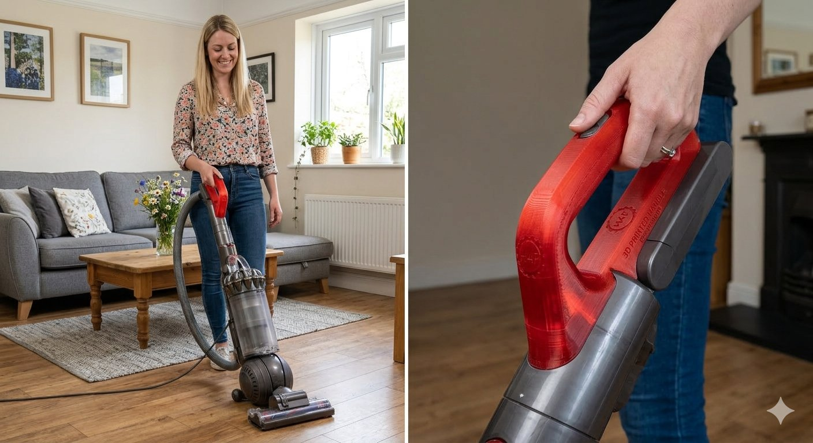
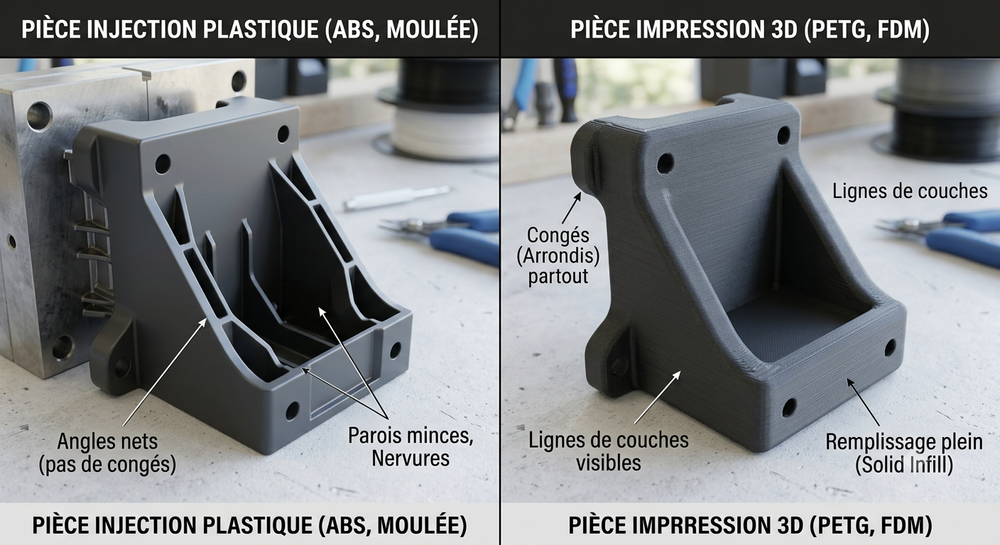

« Là où l'objet s'est brisé, la réparation ne s'efface pas : elle se souligne, à l'or. »金継ぎ — Kintsugi, l'art japonais de réparer à l'or
Notre parti pris
Un appareil qui fonctionne encore ne mérite pas la benne pour une pièce en plastique de quelques grammes.
La pièce réparée n'imite pas — elle affirme sa fonction. Une touche de personnalisation transforme la contrainte technique en choix esthétique.
Modéliser et imprimer une pièce orpheline coûte moins, en argent et en carbone, que remplacer un appareil entier encore parfaitement viable.
Derrière chaque fichier : de la modélisation, un slicing expert et des contraintes de fabrication maîtrisées. Pas un simple « scan-copie ».
Une pièce d'origine est injectée : matière fondue sous pression dans un moule d'acier, finition lisse, résistances impossibles à reproduire couche par couche. Mais heureusement, notre expertise nous permet de trouver des stratégies pour pallier ces faiblesses.
Cependant, un moule et sa mise en place coûtent cher : ils ne se rentabilisent qu'en produisant des centaines de milliers d'exemplaires identiques, depuis une usine centralisée. C'est l'inverse du besoin réel — une seule pièce, précise, disponible près de chez soi, au moment de la panne.
L'impression 3D construit autrement — par dépôt de matière, à l'unité et au plus près du client. Le rendu diffère, certaines formes doivent être repensées pour rester imprimables et solides.
Notre réponse n'est pas de faire semblant, mais de concevoir pour ce procédé : une pièce fonctionnelle, durable, et une finition qui devient une identité.
Voir le processus
En un coup d'œil
Les renforts triangulaires visibles sur la pièce injectée sont une stratégie de conception. En injection, on fuit les parois épaisses : coûteuses en matière et sujettes aux retassures (creux qui se forment en refroidissant).
Les nervures apportent la rigidité tout en gardant des parois minces : moins de matière, un refroidissement plus régulier, et une pièce pensée pour sortir proprement du moule — le démoulage.
Un moule d'injection est un bloc d'acier usiné au centième. Il est parcouru de circuits de fluide caloporteur : chauffé pour aider le plastique en fusion à remplir toute l'empreinte, puis refroidi pour figer la pièce et accélérer le démoulage.
Ses surfaces sont polies, parfois à la main jusqu'au poli miroir — pour l'aspect et pour que la pièce se détache. Ce niveau d'exigence ne se rentabilise que sur d'immenses séries.
Décrivez la panne en langage courant. Notre recherche comprend « le bac à couverts de mon lave-vaisselle » aussi bien qu'une référence technique.